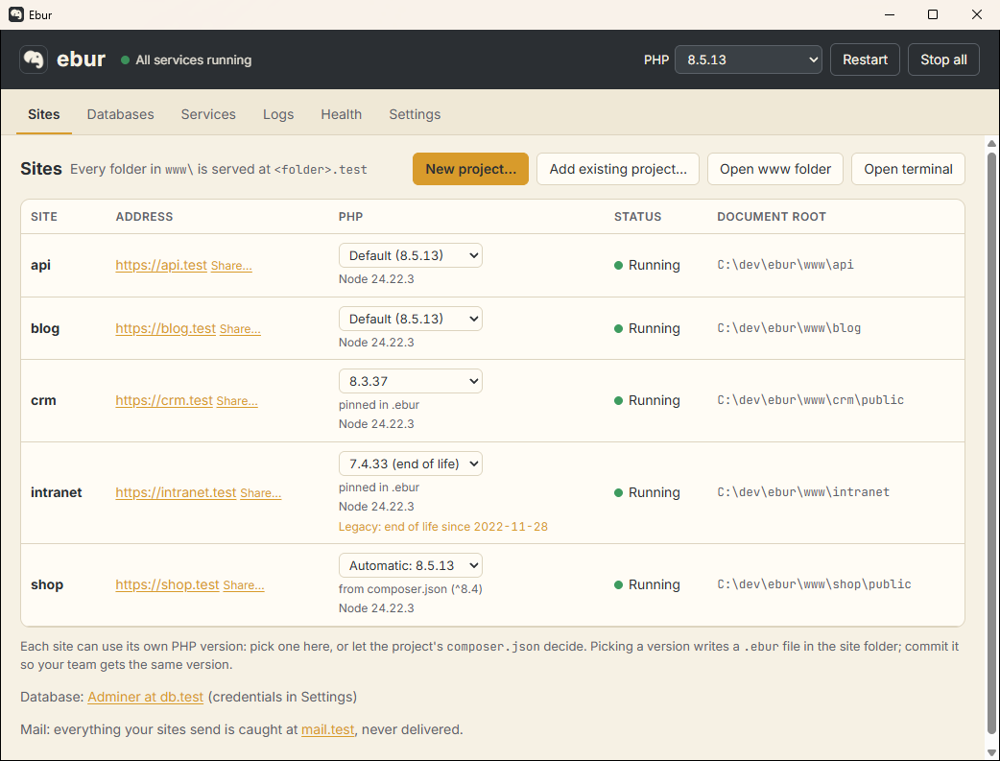
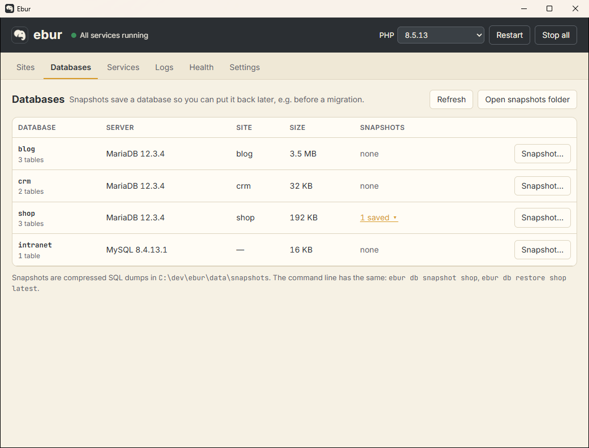

Local PHP development, without the setup
Ebur runs PHP, Nginx, MariaDB or MySQL, Redis and Node.js on your Windows PC. Put a folder in www\ and it is a site at https://folder.test, with its own PHP version and a trusted certificate. Free and open source.
Windows 10 (21H2 or later) and Windows 11, x64 · 7 MB installer · MIT licence

Everything a PHP project needs, on your machine
One folder holds Ebur, its runtimes and your sites. Ebur downloads official builds, checks each one's SHA-256, and never changes your system PATH.
PHP per project
PHP 8.2 to 8.6, plus 7.4, 8.0 and 8.1 for old projects. Each site picks its version from composer.json or a .ebur file, and they all run at once.
Trusted local HTTPS
Every site gets a certificate your browser trusts. Ebur's certificate authority is limited to .test and localhost names, so it cannot be misused for real websites.
MariaDB and MySQL
Run either, or both side by side on their own ports. MySQL 8.4 LTS, with 8.0 and 5.7 for legacy apps. Adminer is built in.
Database snapshots
Save a database before a risky migration and put it back with one click, or ebur db restore shop latest.
New projects in one step
Laravel, WordPress or Symfony, each with its own database and a ready .env. Projects outside www\ can be linked in.
Mail capture
Password resets and sign-up emails land in a local inbox at mail.test instead of reaching real people.
Node.js and Redis
Node versions per project from .nvmrc or package.json, so Vite and npm just work. Redis with PHP's redis extension.
Share links
A temporary public https:// address to show a site to a client or test it on your phone. It ends by itself after an hour.
Doctor
ebur doctor checks ports, runtimes, configs and the hosts file, and explains how to fix what it finds.
A tray app that stays out of the way
Start and stop services, switch PHP versions, look at logs and manage databases from one window, in light or dark. Close it and Ebur keeps running quietly in the tray.
Everything the window does, the ebur command does too.

Or do it all from the command line
Scriptable, with --json output for your own tools. Ebur's terminal puts PHP, Composer, Node and the database clients on PATH for that window only.
> ebur new shop --laravel > ebur sites php shop 8.3 # pin one site's PHP > ebur install mysql 8.4 # next to MariaDB > ebur db snapshot shop # before a migration > ebur share shop # public link for 1 hour > ebur doctor
Built to be trusted
A development tool runs code on your machine and installs a certificate authority. Ebur takes that seriously.
Checked downloads
Runtimes come from their official sources and are checked against SHA-256 checksums. The list of versions is signed, so a tampered list is refused.
No telemetry
Ebur collects no usage data. Its only background request is a daily check for a newer runtime list, with nothing that identifies you, and it can be turned off. Services only listen on this computer.
Open source
MIT-licensed and developed in the open. Read the code, the requirements and every design decision on GitHub.
Up and running in a minute
No Docker, no WSL, no virtual machine.
- InstallRun the installer, or unzip the portable build into
C:\ebur. - Pick your stackA short setup asks for a PHP version, a database and HTTPS.
- Add a siteCreate
C:\ebur\www\shop\index.phpand openhttps://shop.test.
Download Ebur
Free for any use. Installer and portable zip, with SHA-256 checksums, on GitHub Releases.